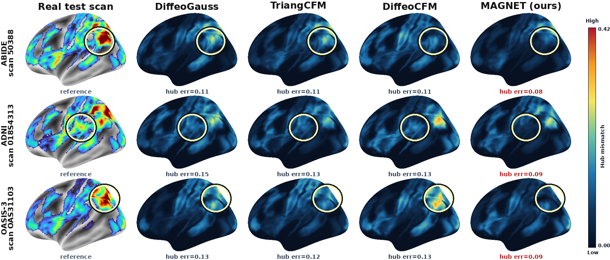
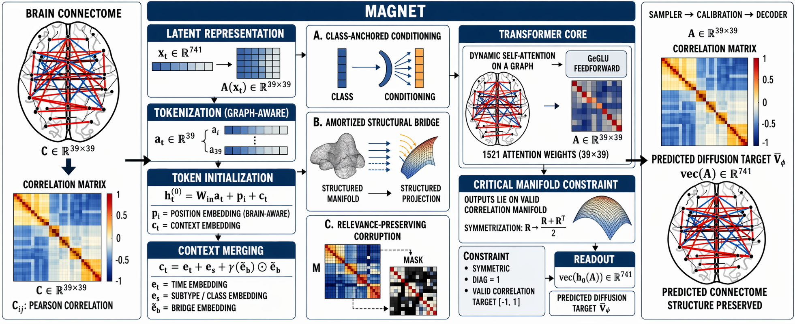
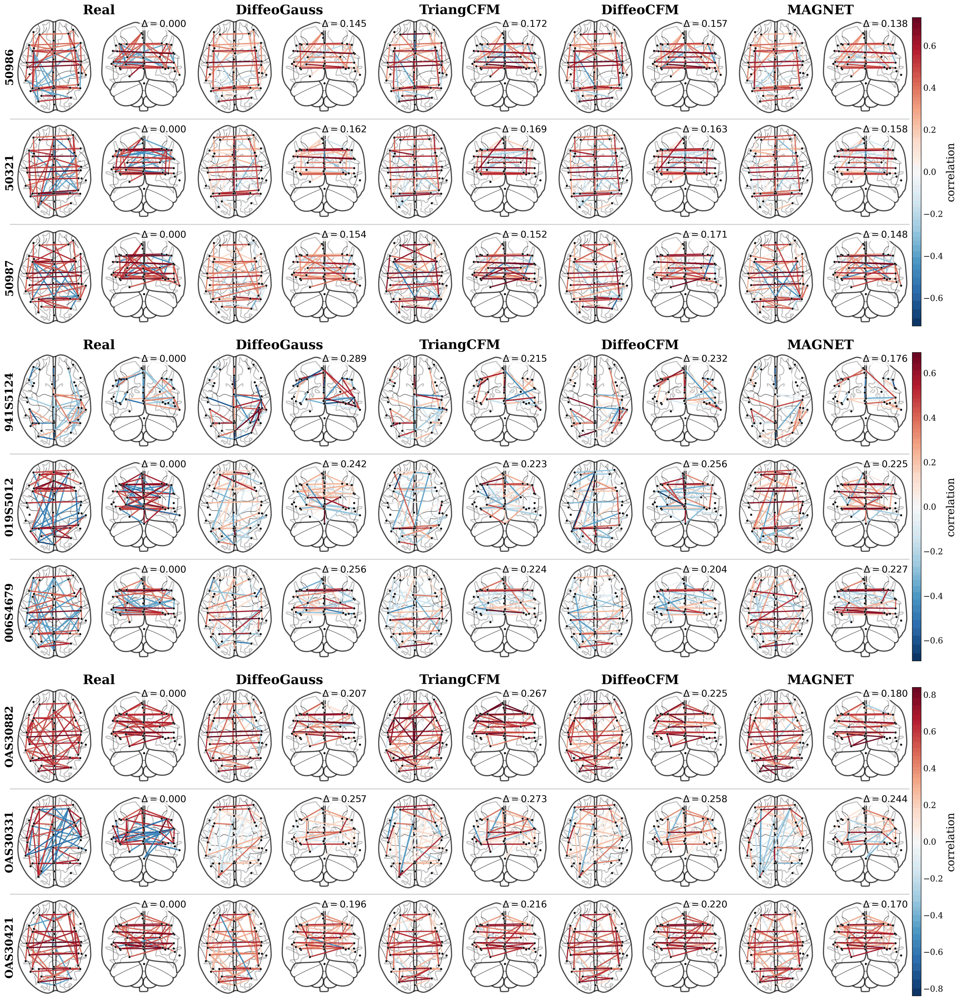

View full sizeCortical hub alignment
Spatial patterns across three independent cohorts.
Accepted at NeurIPS 2026
* Equal contribution
Valid correlation geometry is only the beginning. MAGNET generates class-conditional functional connectomes while preserving finer clinical structure.
Abstract
Functional brain connectome represents neural connectivity as a matrix of pairwise interactions between brain regions. Generation of functional connectomes is not only a question of validity; rather, having satisfied the constraints on the correlation matrix, the next step is to recover the class-conditional geometry buried under coarse labels. We propose MAGNET, a Manifold-Aware Graph Diffusion Network which uses a normalized-Cholesky representation of the manifold of correlation matrices that guarantees validity. MAGNET lifts noisy latent states into ROI-level region tokens and performs denoising with a relational inductive bias over brain atlas regions. To deal with structural problems induced by coarse labels, MAGNET employs class-anchored conditioning, amortized structural bridge, and relevance-preserving corruption. Across ABIDE, ADNI, and OASIS-3, MAGNET consistently achieves favorable results compared to previous manifold-aware approaches, demonstrating improvements of 7-21% in class-conditional fidelity (α,β-F1) across three cohorts and better sampling efficiency. Moreover, while training only with strict binary labels, MAGNET is capable of maintaining clinical heterogeneity through fine substructure of the connectomes in a zero-shot setting, improving subclass covariance alignment (λ-MSE) by over 30%. These results suggest that geometric validity is a necessary but insufficient condition for clinical utility in connectome synthesis. Moreover, efforts in making the diffusion denoising class-conditional manifold aware finds utility beyond the highly curved brain connectome generation as this is a critical problem in various general settings.
The approach
MAGNET combines a normalized-Cholesky representation, ROI-level graph denoising, class-anchored conditioning, an amortized structural bridge, and relevance-preserving corruption.

View full sizeThe evidence
Across ABIDE, ADNI, and OASIS-3, MAGNET is evaluated for class-conditional fidelity and preservation of finer connectome structure.

View full sizeSpatial patterns across three independent cohorts.

View full sizeReal and generated connectivity patterns, shown together.